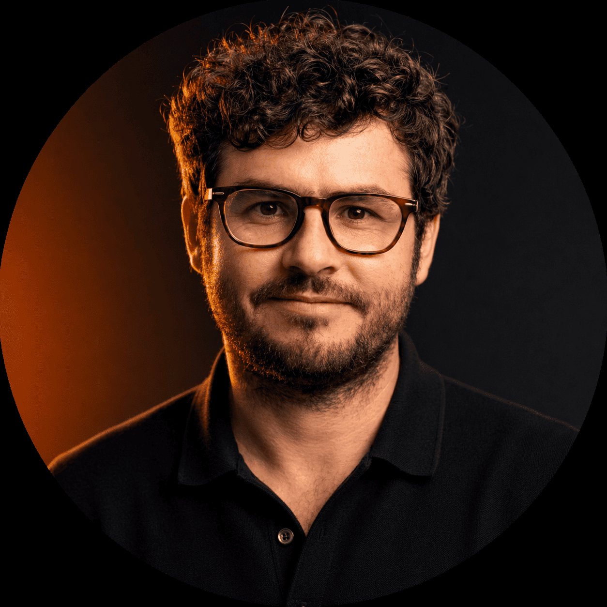
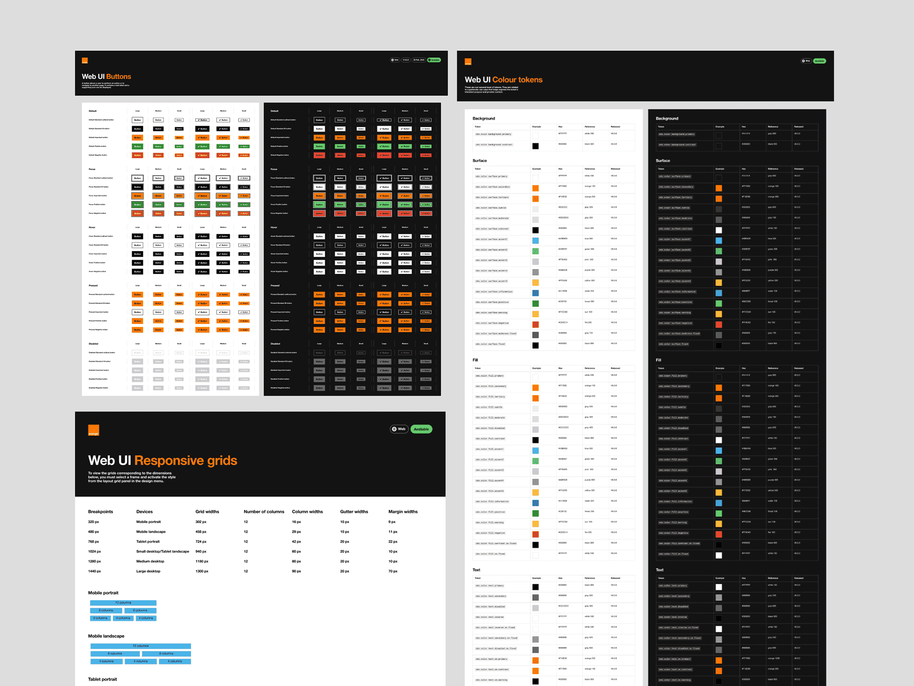
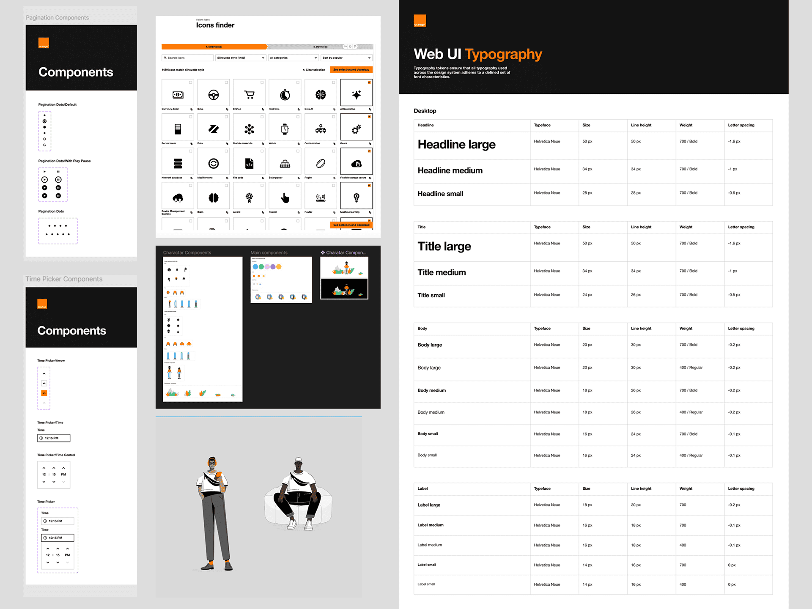
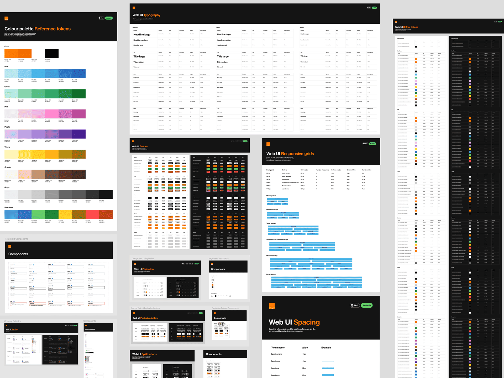
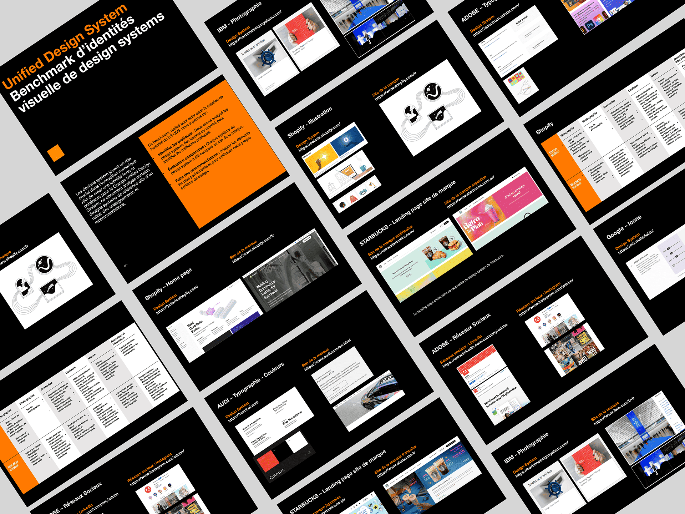
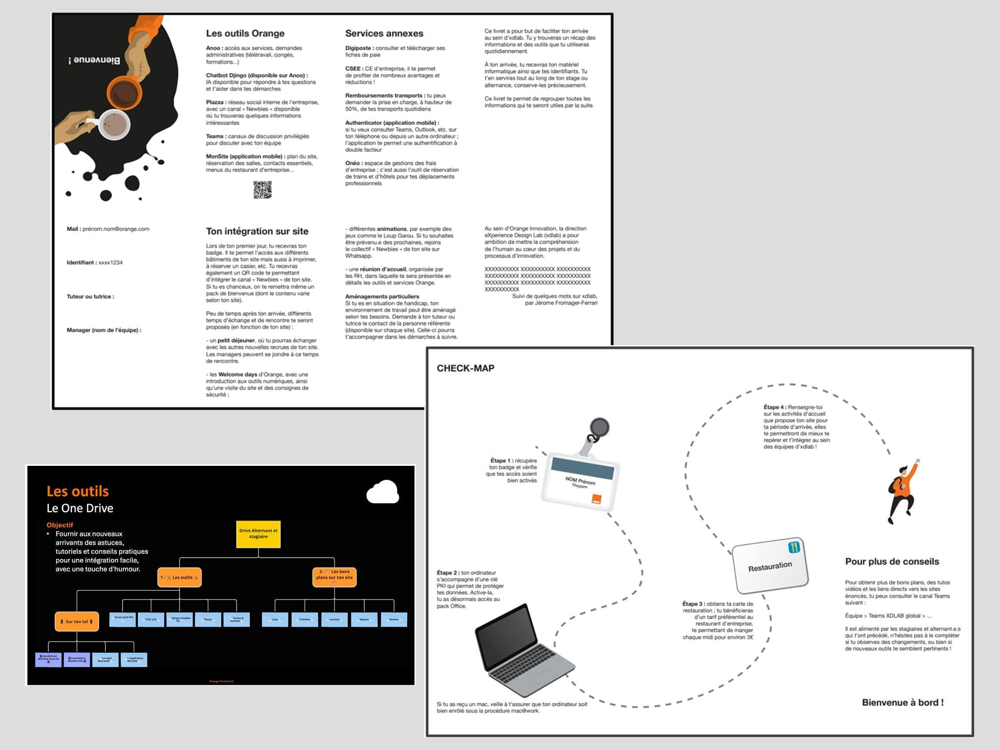
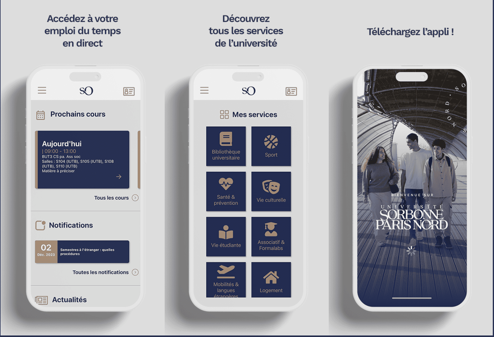
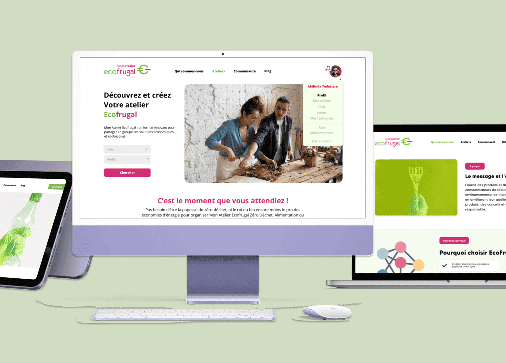

Hi, 👋 I'm
Oussama
Barkallah
I design and build digital products — from brand identity to live platform. I take products from concept to launch, craft UIs that convert, and write frontends that perform.

Selected Motion & Visual Design Work
Visual Design Work
Motion, branding, logos — the visual work behind the products.
01 / Landscape Formats
02 / Portrait Reels
03 / Brand Layouts
04 / Logo Design
Selected Frontend Engineering Work
Real products, real problems,
real impact
Product Infrastructure
Design System at Scale —
Orange XDLab
During my internship at Orange XDLab, I contributed to the evolution of the Orange Unified Design System (ODS) — a large-scale design ecosystem built to ensure consistent, scalable, and accessible digital experiences across Orange products. I collaborated closely with senior designers, the Product Owner, and developers on components, icon systems, illustration libraries, and onboarding workflows.
+60 Components
Improved and redesigned several poorly structured components to optimize usability.
10 UI Kits
Developed comprehensive UI kits to accelerate team production and ensure cross-platform visual consistency.
Solaris Icon Library
Complete refactoring — cleaned up structures, fixed inconsistencies, removed duplicates, and enhanced metadata and categorization.
Onboarding Program
Created an onboarding book, documentation, and a dedicated Teams channel for future interns and apprentices.
Design System Benchmark
In-depth analysis of Material Design, Atlassian, Carbon, and others to provide strategic recommendations for OUDS.
Collaboration
Partnered with the Product Owner and development teams to ensure system consistency, component maintainability, and technical feasibility.





UI/UX Design
Interfaces that just feel right

USPN Mobile App

Mon Atelier Écofrugale

Retail Mobile App
UX Design
Before & After
Every redesign started with a real problem — a confusing layout, a broken flow, or a brand that didn't reflect the product's value. Drag the slider to reveal the transformation.
A complete visual overhaul — modernizing the layout, improving user flows, and aligning the interface with the platform's ecological values.
Redesigned a custom interface that blends brand identity with complex business tools, including a tonnage calculator and automated order forms.
Tools & Craft
The toolkit behind every project
The Process
How I go from idea
to finished product
Discovery & Brief
I start by understanding your goals, scope, target users, and constraints. Whether it's a brand, a product interface, or a full build — this is where I define what success looks like.
Research & Strategy
User research, competitor analysis, and market context. I map out the landscape before making any creative decisions, grounding every choice in real insight rather than assumptions.
Wireframe & Prototype
Structure before aesthetics. I define information architecture, user flows, and key interactions as wireframes or clickable prototypes — aligning on the experience before going into visual design.
Design & Iteration
The main creative phase — UI screens, brand systems, components, or visual assets. Iterative with feedback rounds to make sure every detail is intentional and every decision is justified.
Build & Develop
I bring designs to life with clean, production-ready code. React, Js, or whatever the stack requires — pixel-perfect, performant, and accessible from day one.
Delivery & Handoff
Final files in the right formats — Figma handoff, brand guidelines, deployed code, or exported assets. Everything organized, documented, and ready to use immediately.
Let's Work Together
Have a project in mind?
Let's make it happen
I take on a small number of freelance projects alongside my full-time work — startups, agencies, and brands who need sharp design, clean code, or both.
Drop me a line